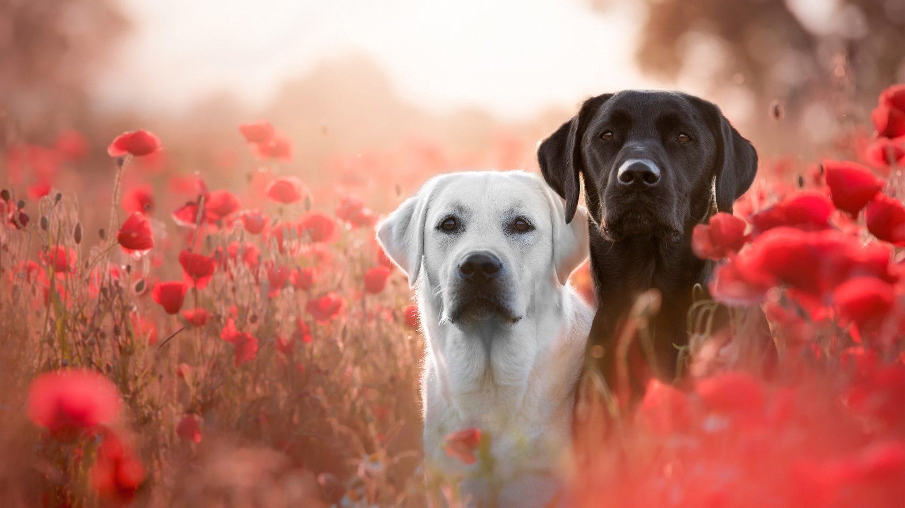
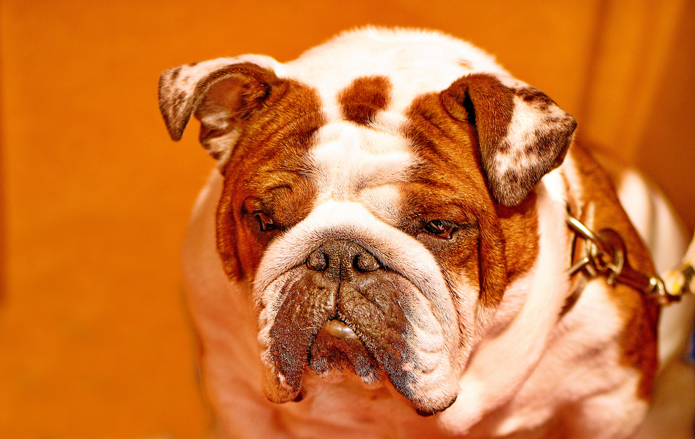
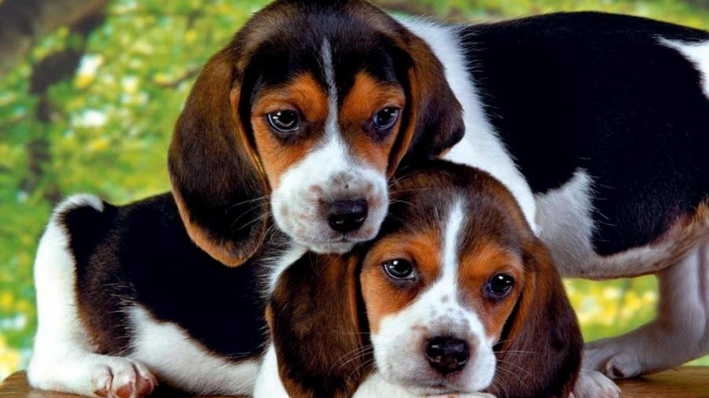
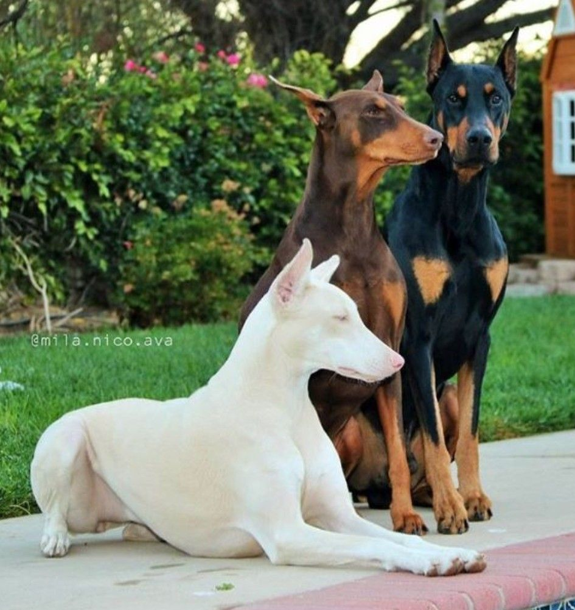
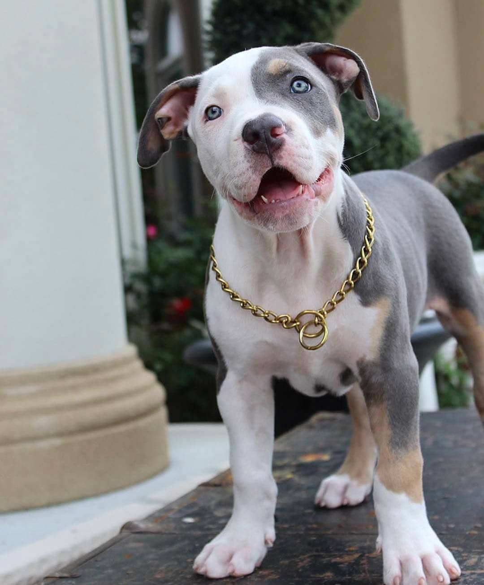
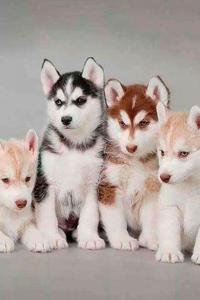

El Pastor alemán, siempre en boga, listo y fácil de adiestrar, es bastante activo y disfruta cuando tiene algo que hacer. Por ello, necesitan realizar gran cantidad de ejercicio a diario; de lo contrario, se vuelven nerviosos o muy excitables.
Los pastores alemanes alcanzan como máximo 65 cm de altura, y pesan hasta aproximadamente 41 kg.
Se trata de un perro bien proporcionado. La cabeza es ancha y se estrecha con gracia en un hocico afilado. Las orejas son bastante largas y se mantienen erguidas. La espalda está nivelada y es musculosa terminando en una cadera que se curva hacia abajo y en una cola bastante poblada. El pelo es grueso, duro y áspero presentando generalmente una longitud media, sin embargo, a menudo nacen ejemplares de pelo largo. El color del pelo puede ser negro, pardo, negro y pardo o gris.
Labrador
Inteligente, Amable e Extrovertido.

El Labrador cuenta con múltiples rasgos adorables: es inteligente, es fácil de adiestrar y es un excelente compañero de familia. Necesitan practicar ejercicio moderado porque, en caso contrario, o si se quedan solos, pueden adoptar comportamientos destructivos.
Los labradores retrievers son perros de constitución robusta y compactos. Su aspecto es prácticamente cuadrado, con un cuerpo fuerte y patas robustas. La altura máxima para un macho es 60 cm, lo que los sitúa en la categoría de perros de tamaño medio, aunque debido a su constitución robusta parecen mucho más grandes. El peso oscila entre los 38 kg en un macho grande hasta los 25 kg en una hembra, más pequeña. Los perros criados para la línea de campo suelen ser más altos y algo más delgados de constitución
Los labradores se reconocen fácilmente por su cabeza ancha, orejas caídas y ojos grandes y expresivos. Dos características del labrador son su doble capa de pelo grueso pero bastante corto, muy resistente al agua, y la conocidísima "cola de nutria". La cola es gruesa y robusta y sale de la línea superior casi recta. Los pies se describen como con "membrana interdigital", ya que tienen una piel más larga entre los dedos que los ayuda a nadar. El color puede oscilar desde el negro pasando por el chocolate hasta un rojo/amarillo e incluso casi blanco.
El labrador retriever es una raza que madura a un ritmo moderadamente rápido, ya que alcanza su altura de adulto entre los seis y los doce meses de edad, aunque puede seguir ganando peso hasta los dos años de vida. Muchos alcanzan los 12 o 14 años de edad.
Bulldog
Voluntariosos,Amigable y Docil.

Son típicamente perros de baja resistencia, tienen una disposición dulce, son predecibles, confiables y excelentes con los niños y solo necesitan ejercicio moderado.
El bulldog inglés es una pequeña mole fornida cuyos característicos andares de cangrejo rebosan de fuerza, estabilidad y vigor.
La cabeza del perro es grande y esférica, y el hocico es extremadamente corto, lo que da a la cara un aspecto aplanado. Los ojos del bulldog inglés son oscuros y están situados bajos y separados en la frente en el plano frontal. La trufa es negra y ligeramente respingona. Las mandíbulas son enormes, anchas y en prognatismo inferior. La mandíbula inferior sobresale ante la superior y apenas deja a la vista los incisivos inferiores, lo que produce una mueca cómica. Los labios son carnosos y colgantes. Las mejillas son bien redondeadas y sobresalen hacia los lados. Las orejas son finas, pequeñas y se inclinan hacia adelante como solapas que enmarcan la frente.
El cuello del bulldog inglés es corto y grueso; los hombros son enormes, musculosos y anchos. El pecho es profundo, la espalda tiene forma cilíndrica y está ligeramente arqueada. Sus caderas redondeadas sobresalen ligeramente sobre el nivel de la espalda. La cola achaparrada es gruesa y recta o bien enroscada. Sus patas cortas y robustas están bien musculadas. Están separadas y ligeramente arqueadas en los codos y corvejones para dar forma a una postura firme y de base amplia.
El bulldog inglés mide unos 40 cm. La hembra pesa aproximadamente 23 kg, y el macho unos 25 kg.
Su piel es suelta y colgante con intensas arrugas y gruesos pliegues en la cara y una papada que cuelga desde la garganta. El pelo es corto y de textura fina. Los distintos patrones de color son atigrado, pinto y blanco, rojo, leonado o barbecho sólidos.
Rottweilers
Alerta,Confiable y Valientes.
Los Rottweilers, no recomendados para propietarios primerizos, necesitan una socialización amplia y continua para ser buenos compañeros de la familia.
A primera vista, un rottweiler tiene una fuerza compacta, algo bastante cierto. Los rottweilers, ligeramente más largos que altos, son perros grandes, con una altura que oscila entre los 55 cm en las hembras pequeñas y los 70 cm en los machos grandes. El peso oscila entre los 36 y los 54 kg.
Son perros con forma compacta y enormes cabezas. Las orejas están bastante pegadas a la cabeza y cuelgan un poco hacia abajo. El hocico es cuadrado y fuerte. Estos animales pueden ser algo babosos debido a que sus belfos (labios) están caídos. Los rottweilers siempre deben ser negros con puntos pardos, y el pelo ideal es bastante corto, denso y algo duro. Aunque a veces nace un cachorro "tupido" en una camada, ese pelaje está descalificado en el ámbito de la crianza. Las colas se amputan muy cortas, idealmente con una extensión de una a dos vértebras.
Como suele ocurrir en las razas más grandes, los rottweilers pueden madurar despacio. Muchos no alcanzan el tamaño adulto total hasta los dos o tres años de vida, aunque la altura adulta se suele establecer con un año. Con la edad, estos perros engordarán ensanchando el pecho y convirtiéndose en los enormes perros que esperamos.
Beagle
Amistoso, Apacible e Inteligente.

El Beagle, un perro alegre y cariñoso, prefiere la compañía. Esta raza puede adoptar comportamientos muy destructivos y ladrar en exceso si se dejan solos.
Los beagles se presentan en dos tamaños distintos. Algunos miden unos 30 cm o menos y pesan sobre los 10 kg; el segundo grupo de tamaño mide entre 30 y 40 cm y pesa entre 15 y 20 kg aproximadamente.
Los beagles son perros compactos y musculosos con un cráneo ligeramente abombado. Su mandíbula es más bien cuadrada y la trufa ancha. Las orejas son largas y colgantes. Su pecho es profundo, la espalda es recta y tienen una cola moderadamente larga implantada alta. El pelo suave y denso de esta raza suele ser negro, pardo y blanco.
Golden Retriever
Inteligente, Amable e Extrovertido.
Como los Golden retrievers (o cobradores dorados) son perros con ganas de agradar y responden positivamente al adiestramiento en obediencia. Complementan este rasgo con el hecho de ser juguetones, cariñosos y de temperamento apacible.
Los machos de golden retriever miden entre 58 y 62 cm y pesan entre 29 y 32 kg. Las hembras miden entre 53 y 55 cm y pesan entre 25 y 29 kg.
El golden retriever tiene un pelo resistente al agua ondulado o liso y de color desde dorado hasta crema. Una de las características más interesantes de esta raza son los flecos en cuello, patas, muslos, parte inferior y cola.
La cabeza del perro es fuerte y ancha. Las orejas no son muy grandes, pero están implantadas en una zona alta en la cabeza y cuelgan justo por debajo de la línea de la mandíbula. El pecho es profundo y el cuerpo está bien equilibrado. Los golden retrievers viven aproximadamente entre 10 y 13 años.
Dóberman
Inteligente, Energetico y Obediente.

Los Dóberman son perros fuertes y enérgicos que necesitan practicar mucho ejercicio. Si no lo practican, es probable que se vuelvan irritables o incluso agresivos. Una cuidadosa socialización y adiestramiento en obediencia desde muy jóvenes son esenciales.
Los machos miden unos 60 cm y pesan unos 32 kg, mientras que las hembras son algo más pequeñas. El dóberman tiene una cabeza alargada y esbelta y un cuerpo musculoso. Se les suelen cortar las orejas para que se mantengan erguidas, y la cola suele amputarse para que quede corta. Tiene un pelo corto, liso y brillante que es negro, rojo oscuro, azul o leonado con marcas de color óxido en la cara, cuerpo y cola. La muda de este perro, que requiere muy poco aseo, es media. Los dóberman viven aproximadamente entre 10 y 12 años.
Los dóberman están considerados perros atentos, cariñosos y dulces con la gente, siempre que se socialicen y adiestren adecuadamente. Son fieles a sus propietarios y se llevan bien con los niños si crecen juntos; sin embargo, algunos dóberman se apegan solo a una persona.
pitbull Terrier
Inteligente, Amable e Extrovertido.

El Pit Bull no es una raza especialmente grande. De hecho, en su forma de trabajo, el Pit Bull es una raza más bien pequeña. Esto les permite a sus propietarios tenerlos, bastante cómodamente, en una casa pequeña o en un piso. Mientras que es un perro con mucha energía cuando se le da la oportunidad de hacer ejercicio, es una raza que prefiere estar relajada cuando está en casa. Como tal, no estará todo el rato enredando y no es un perro que se haga más llamativo que lo que muchos propietarios desean en sus perros.
El Pit Bull tiende también a ser un perro cordial. Puede jugar mucho y vivir durante mucho tiempo sin costarle a su dueño una fortuna en facturas del veterinario. Cuanto más próxima esté una línea de Pit Bulls a los Pit Bulls originales de trabajo, más cordiales serán los perros de esa línea. No es, en absoluto, inusual tener un Pit Bull que viva 12, 13 o 14 años, e incluso más. Cuando dichos perros finalmente sucumben ante la vejez, lo suelen hacer sin sufrir enfermedades largas, prolongadas ni caras.
Después de todo, el Pit Bull es un perro increíblemente fiel. La raza se vuelve muy unida a su familia humana y no aceptará a otros a no ser que perciba que son bienvenidos en casa como si fueran parte de la familia. Como extensión de este atributo, también puede ser un perro muy poderoso y protector, aunque pequeño y manejable, y puede ser muy útil en las manos adecuadas y con una propiedad responsable. De todas formas, al contrario que muchos perros muy fieles, el Pit Bull puede aceptar los cambios. Si se da la desafortunada situación de que una familia tenga que renunciar a su Pit Bull, el perro se entregará a su nuevo propietario con el tiempo. De la misma forma, un Pit Bull «de segunda mano» puede ser una opción que usted podría considerar, particularmente si conoce a sus antiguos propietarios y su estilo de vida.
Husky Siberiano
Voluntariosos,Amigable y Docil.

Los Huskies siberianos, los clásicos perros del norte, son simpáticos e inteligentes, aunque algo independientes y tozudos. Se sienten realizados con la compañía de las personas, aunque necesitan un adiestramiento sólido y moderado desde que son cachorros.
El husky siberiano es un perro de tamaño medio ligeramente más largo que alto cuya altura oscila entre los 50 y los 60 cm y el peso entre los 20 y los 35 kg.El husky siberiano tiene las orejas erguidas y los ojos de marrones a azules o también dispares. Lleva el cuello recto y la línea superior está nivelada. La cola, bien cubierta de pelo, forma una hoz hacia arriba o bien se extiende hacia atrás.
Tienen un pelo muy denso y afelpado con una importante capa interna. Tienen un pequeño collar de pelo alrededor del cuello, pero no tienen flecos largos en las patas ni en la cola. Los colores van del negro al blanco pasando por todas las opciones intermedias. Las mayoría de estos perros tienen marcas blancas, especialmente en el pecho y las patas.
Fundacion Huellas de Mateo
El equipo de la Fundacion huellas de Mateo el cual ha donado su tiempo y conocimiento para la realización de este proyecto son los siguiente: